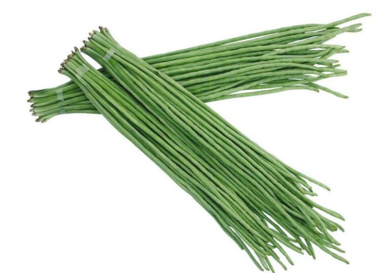

豇豆的营养价值高么？糖尿病人绝佳的食疗物品

我还记得曾今翻看高中的笔记本时，上面这样记录过：纤维素由高尔基体生成，与多糖一起，是构成植物细胞壁的主要物质。注：少数藻类没有细胞壁。
于是我终于回想起为什么父母总是在劝我多吃蔬菜水果的时候告诉我这些东西促进消化，润肠通便。
因为这些都是纤维素的功劳！
糖尿病人绝佳的食疗物品
人体因为缺少一种关键的酶，所以没法消化纤维素，这就导致了当我们食用豇豆等蔬菜的时候，这些无法消化的纤维素会一直保留到我们的肠道中。
而这里恰恰就是其发挥功效的地方！
在人的肠道内，纤维素会由于其本身的作用促进肠胃蠕动，从而促进消化，排便，达到润肠通便的效果。
别看这功效普普通通，这样一套操作下来，由于排泄物在大肠中停留的时间减少了，其中的有害物质停留的时间也减少了，这就很有效的达到了预防肠癌的效果！
而且由于纤维素无法消化，吃下去后就会很不讲道理的占据一部分食物的空间，相当于变相减少了食用食物的总量，也算是为减肥事业做出了一番贡献。
当然，单说作用的话纤维素还有着治疗糖尿病的效果，但它并不是唯一的，在豇豆中，还有含有另一种物质以降低治疗糖尿病闻名——磷脂！
豇豆中的磷脂有着促进胰岛素分泌的作用，还能增加糖的代谢作用，而且其中还含有烟酸（维生素B3）这种这种天然的血糖调节器。
两者相加，豇豆可以说是糖尿病人绝佳的食疗物品！
本站文章均来自互联网，仅供学习参考，如有侵犯您的版权，请邮箱联系我们删除！
 上一篇
上一篇